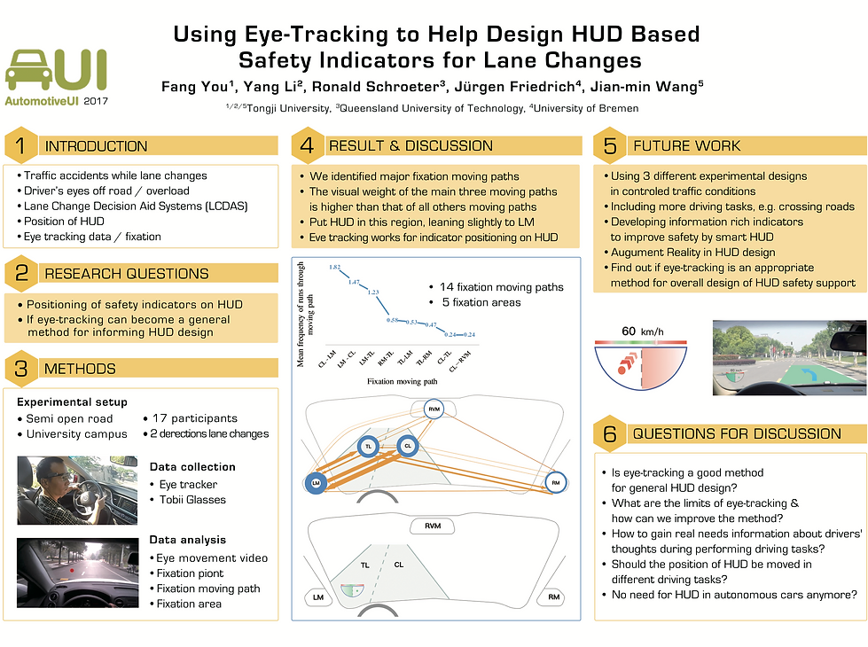
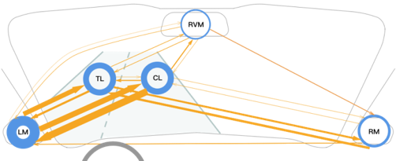
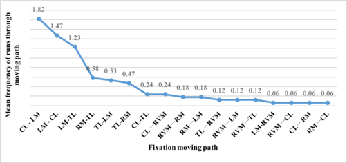
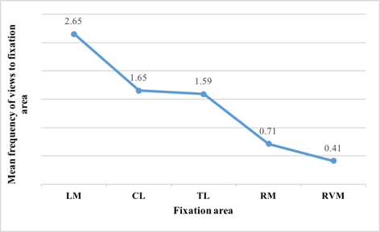
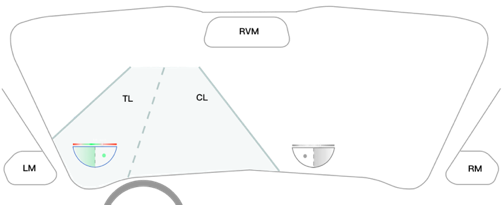
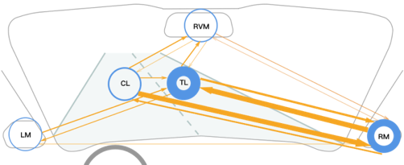
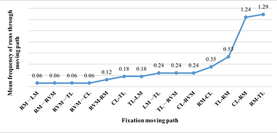
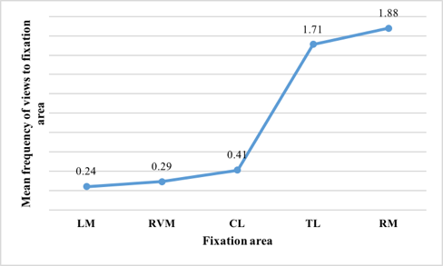
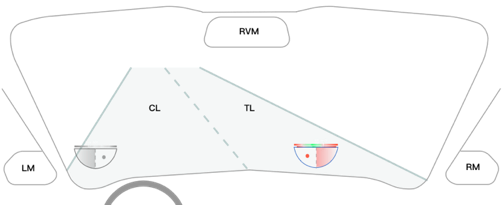

车辆视野与眼动研究Analysis of Vehicle Visual Field
项目说明按旧站英文原文保留；时间与个人介绍反映当时的作品集记录。Original portfolio text is preserved in English. Dates and biographical information reflect the archived portfolio; see the academic homepage for current information.
眼动研究：数据视频展示 / Eye-tracking Study: Data Video

Using Eye-Tracking to Help Design HUD-Based Safety Indicators for Lane Changing
(03.2017--07.2017)
Poster


Some figures in article.

Figure1. Fixation moving paths and fixation areas on right-to-left lane changing

Figure 2. Visits Fixation moving paths on right-to-left lane change

Figure 3. Visits of fixation areas on right-to-left lane changing

Figure 7. Indicator location on right to left lane changing
Green here means that in this situation the driver can change line.

Figure 4. Fixation moving paths and fixation areas on left-to-right lane changing

Figure 5. Visits Fixation moving paths on left-to-right lane change

Figure 6. Visits of fixation areas on left-to-right lane changing

Figure 8. Indicator location on left to right lane changing
Red here means that in this situation the driver must not change line.
Publication: Fang You, Yang Li, Ronald Schroeter, Jürgen Friedrich, Jianmin Wang. 2017. Using Eye-Tracking to Help Design HUD-Based Safety Indicators for Lane Changing. In proceedings of the AutomotiveUI '17 Adjunct, September 24–27, 2017, Oldenburg, Germany © 2017 Association for Computing Machinery. ACM ISBN 978-1-4503-5151-5/17/09...$15.00 https://doi.org/10.1145/3131726.3131757